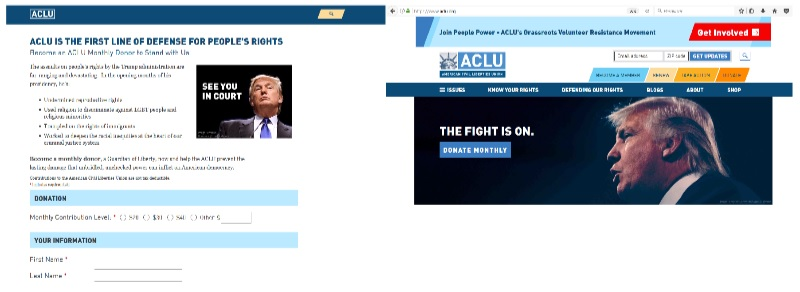
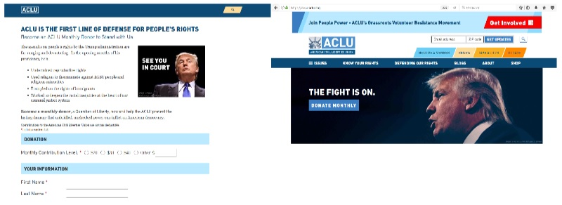

Mobilizando Recursos com o Poder das Pessoas
03 de Dezembro de 2018 às 06:00
Novos modelos de Captação de Recursos
Aprendi com Marcelo Iniarra (marceloiniarra.com), quando migrei da área financeira para captação de recursos com indivíduos no Greenpeace, que quando falamos de mobilização de recursos de indivíduos, não estávamos falando de dinheiro e sim de como engajar as pessoas com uma causa, conectar as pessoas com o que elas realmente acreditam e fazer a diferença na vida delas e no mundo. Uma das formas de mostrar esse engajamento, apoio, conexão é por meio de uma doação financeira.
Naquela época, o mundo digital estava apenas começando, abaixo assinados ainda eram feitos no papel e enviados pelo correio, a comunicação era de um para muitos, formulários de doação online estavam surgindo.
De lá pra cá, muita coisa mudou. Focando na área de captação de recursos, podemos dizer que muitas organizações iniciaram seus programas de diversificação de fontes de recursos, algumas cresceram exponencialmente, a captação de recursos com indivíduos começou a ser uma realidade no Brasil, algumas construíram grandes bases de doadores, centenas ou milhares de pessoas contribuindo mensalmente para uma causa por meio de um meio de pagamento automático gerando sustentabilidade e também legitimidade. Agora já existem sistemas de CRM (gestão de doadores) e processos de cobrança doadores recorrentes fáceis de serem implementados e acessíveis, isto quer dizer sem um alto custo no início do processo.
Os meios de comunicação também mudaram, ficou interativo, temos mais interlocutores, mais participação e colaboração. Cada um de nós pode criar uma campanha de captação de recursos para uma causa, uma pessoa ou mesmo para montar uma empresa através de plataformas de financiamento coletivo de maneira pratica e rápida. Também podemos lutar pela causa que acreditamos criando um abaixo assinado e juntando mais gente que acredita nas mesmas coisas que nós, utilizando também plataformas super simples e atingindo resultados impressionantes.
Hoje cada um de nós pode ser transformar em uma organização otimizada, aproveitando o momento e sem precisar passar por processos de aprovação longos e burocráticos. Temos a nossa própria rede, nosso próprio público, podemos fazer sozinhos o que antes precisávamos de muitos. De acordo com o Relatório de Tendências Globais de Doação 2018, 41% das pessoas realizaram doações para campanhas de crowdfunding de indivíduos. Por outro lado, 16% das pessoas que doaram para essas campanhas de crowdfunding, diminuíram as doações para organizações. Analisando esse mundo em constante evolução, mudanças e infinitas possibilidades, qual é o futuro da captação de recursos? Está na hora de pensar em novos modelos.
Eu acredito que no momento atual as organizações tem uma grande oportunidade. Vocês conhecem a ACLU? É uma organização americana que luta contra abuso governamental e defende a liberdade individual incluindo liberdade de expressão, religião, direito de escolha da mulher, cidadania, privacidade e muitos outros. Eles cresceram muito após a eleição de Donald Trump. Esse é um caso real e de sucesso sobre um dos caminhos do futuro: construção de movimento, engajamento e mobilização de recursos trabalhando juntos em prol de uma causa.
O número de doadores pessoa física da ACLU cresceu de 400,000 para 1.84 milhões nos primeiros 15 meses após a eleição presidencial. Em um único final de semana, captaram pelo formulário online US24 milhões. A média anual de doação online que era de US$4 milhões, atingiu US$120 milhões em 1 ano.
O que mudou? O que eles fizeram? Primeiro, com a possibilidade de uma vitória de Trump nas eleições, eles se prepararam, planejaram, pensaram na organização como um todo. Mesmo antes de acontecer, se prepararam para essa possibilidade e estavam prontos para trabalhar com os assuntos relacionados com a causa de direitos quando Trump foi eleito.
Eles contrataram mais advogados, quase dobraram a quantidade no primeiro ano, para aumentar a atuação. Nesse período iniciaram mais de 80 processos de defesa de direitos, conseguiram expandir a atuação e reforçar o investimento para atingir os resultados esperados.
Nesse momento, também surgiram diversas outras organizações trabalhando no mesmo assunto que eles, as pessoas também podiam fazer suas próprias campanhas. Como uma organização centenária teve esse crescimento exponencial? Essa foi a pergunta que eu fiz para o diretor executivo da ACLU quando encontrei com ele ano passado.
A ACLU foi além.... Repensou toda a organização para a realidade hiperconectada que vivemos hoje. Mudou a comunicação, para engajar o doador, entregar valor, aquilo que o doador queria/ esperava.
O que é engajar? Engajar é motivar o outro com ideias e tarefas que façam sentido para a vida dele.
O movimento estava criado, como fazer para que essas pessoas realmente se engajem, fiquem conosco, participem desse movimento, que esse grupo fique mais forte junto e que mais pessoas queiram fazer parte disso. Primeiro, fazendo algo que faça sentido para o doador. Ela preparou a infraestrutura para receber as doações, contratou pessoas para reforçar essa área, colocou o doador no centro do processo.
Quando eles lançaram a campanha, See you in Court (te vejo no tribunal) ou The Fight is on (a luta começou), ela expressa o sentimento, a vontade, o desejo de cada um dos apoiadores da ACLU, além de expressar a essência da organização muito bem. A organização abriu as portas para receber um grupo novo de doadores alinhados com esse novo mundo. Decidiu pensar de forma diferente.

Um dos grandes desafios das organizações é que elas ainda acreditam que tem o poder sobre a comunicação. Eu sei, eu controlo, eu tenho o conhecimento, o compartilhar é relativo. Um dos passos mais importantes da ACLU foi dar o poder para as pessoas, isso significa amplificar a sua voz para centenas e milhares de vozes. Ela continuou a fazer o seu trabalho, a sua essência, com mais recursos conseguiu fazer mais, mostrou o que estava fazendo e conseguiu mais recursos e continuou fazendo mais, mas também criou um novo programa: PeoplePower.org (o poder das pessoas), um sistema de base para o desenvolvimento de campanhas, eventos individuais, produziu material de orientação para que cada pessoa pudesse acessar o seu representante eleito e fizesse demandas, acompanhasse o trabalho, apresentassem o trabalho da ACLU para uma grupo de pessoas, enviassem mensagem para seus pares sobre os assuntos relacionados, entre outros. Somente com o grande apoio de doações individuais e de celebridades a ACLU conseguiu fazer tudo isso.

O engajamento de pessoas com uma causa não é um novo modelo, mas a hiperconectividade, a força dos movimentos, descobrir como dar o poder para as pessoas e ao mesmo tempo engaja-las cria novas oportunidades e precisa ser estudado. Novos modelos estão emergindo todos os dias ao redor do mundo. Marcelo Iniarra lidera laboratórios disrupitivos de inovação, desenvolve campanhas para gerar movimentos já tem muitos anos. Paul de Gregorio iniciou um coletivo em UK focado na construção de movimentos, como ele define, busca pessoas engajadas que vão querer doar e não faz construção de listas.
Como fundraiser que acredita que o poder das pessoas pode mudar o mundo e que somente o engajamento a uma causa pode construir uma base de doadores que resulte na sustentabilidade e legitimidade de uma organização, a ACLU é uma inspiração, é um grande caso de sucesso que prova que as minhas premissas de trabalho já são uma realidade para algumas organizações.
Como brasileira, cada vez que conheço um pouco mais sobre essa história, penso no momento que estamos vivendo no Brasil. Os movimentos estão aqui e são fortes, como vamos dar o próximo passo? Como o poder individual de cada um de nós vai olhar nossa próxima jornada? Eu ainda não tenho uma resposta, mas deixo esse texto para reflexão.
Aprendi com Marcelo Iniarra (marceloiniarra.com), quando migrei da área financeira para captação de recursos com indivíduos no Greenpeace, que quando falamos de mobilização de recursos de indivíduos, não estávamos falando de dinheiro e sim de como engajar as pessoas com uma causa, conectar as pessoas com o que elas realmente acreditam e fazer a diferença na vida delas e no mundo. Uma das formas de mostrar esse engajamento, apoio, conexão é por meio de uma doação financeira.
Naquela época, o mundo digital estava apenas começando, abaixo assinados ainda eram feitos no papel e enviados pelo correio, a comunicação era de um para muitos, formulários de doação online estavam surgindo.
De lá pra cá, muita coisa mudou. Focando na área de captação de recursos, podemos dizer que muitas organizações iniciaram seus programas de diversificação de fontes de recursos, algumas cresceram exponencialmente, a captação de recursos com indivíduos começou a ser uma realidade no Brasil, algumas construíram grandes bases de doadores, centenas ou milhares de pessoas contribuindo mensalmente para uma causa por meio de um meio de pagamento automático gerando sustentabilidade e também legitimidade. Agora já existem sistemas de CRM (gestão de doadores) e processos de cobrança doadores recorrentes fáceis de serem implementados e acessíveis, isto quer dizer sem um alto custo no início do processo.
Os meios de comunicação também mudaram, ficou interativo, temos mais interlocutores, mais participação e colaboração. Cada um de nós pode criar uma campanha de captação de recursos para uma causa, uma pessoa ou mesmo para montar uma empresa através de plataformas de financiamento coletivo de maneira pratica e rápida. Também podemos lutar pela causa que acreditamos criando um abaixo assinado e juntando mais gente que acredita nas mesmas coisas que nós, utilizando também plataformas super simples e atingindo resultados impressionantes.
Hoje cada um de nós pode ser transformar em uma organização otimizada, aproveitando o momento e sem precisar passar por processos de aprovação longos e burocráticos. Temos a nossa própria rede, nosso próprio público, podemos fazer sozinhos o que antes precisávamos de muitos. De acordo com o Relatório de Tendências Globais de Doação 2018, 41% das pessoas realizaram doações para campanhas de crowdfunding de indivíduos. Por outro lado, 16% das pessoas que doaram para essas campanhas de crowdfunding, diminuíram as doações para organizações. Analisando esse mundo em constante evolução, mudanças e infinitas possibilidades, qual é o futuro da captação de recursos? Está na hora de pensar em novos modelos.
Eu acredito que no momento atual as organizações tem uma grande oportunidade. Vocês conhecem a ACLU? É uma organização americana que luta contra abuso governamental e defende a liberdade individual incluindo liberdade de expressão, religião, direito de escolha da mulher, cidadania, privacidade e muitos outros. Eles cresceram muito após a eleição de Donald Trump. Esse é um caso real e de sucesso sobre um dos caminhos do futuro: construção de movimento, engajamento e mobilização de recursos trabalhando juntos em prol de uma causa.
O número de doadores pessoa física da ACLU cresceu de 400,000 para 1.84 milhões nos primeiros 15 meses após a eleição presidencial. Em um único final de semana, captaram pelo formulário online US24 milhões. A média anual de doação online que era de US$4 milhões, atingiu US$120 milhões em 1 ano.
O que mudou? O que eles fizeram? Primeiro, com a possibilidade de uma vitória de Trump nas eleições, eles se prepararam, planejaram, pensaram na organização como um todo. Mesmo antes de acontecer, se prepararam para essa possibilidade e estavam prontos para trabalhar com os assuntos relacionados com a causa de direitos quando Trump foi eleito.
Eles contrataram mais advogados, quase dobraram a quantidade no primeiro ano, para aumentar a atuação. Nesse período iniciaram mais de 80 processos de defesa de direitos, conseguiram expandir a atuação e reforçar o investimento para atingir os resultados esperados.
Nesse momento, também surgiram diversas outras organizações trabalhando no mesmo assunto que eles, as pessoas também podiam fazer suas próprias campanhas. Como uma organização centenária teve esse crescimento exponencial? Essa foi a pergunta que eu fiz para o diretor executivo da ACLU quando encontrei com ele ano passado.
A ACLU foi além.... Repensou toda a organização para a realidade hiperconectada que vivemos hoje. Mudou a comunicação, para engajar o doador, entregar valor, aquilo que o doador queria/ esperava.
O que é engajar? Engajar é motivar o outro com ideias e tarefas que façam sentido para a vida dele.
O movimento estava criado, como fazer para que essas pessoas realmente se engajem, fiquem conosco, participem desse movimento, que esse grupo fique mais forte junto e que mais pessoas queiram fazer parte disso. Primeiro, fazendo algo que faça sentido para o doador. Ela preparou a infraestrutura para receber as doações, contratou pessoas para reforçar essa área, colocou o doador no centro do processo.
Quando eles lançaram a campanha, See you in Court (te vejo no tribunal) ou The Fight is on (a luta começou), ela expressa o sentimento, a vontade, o desejo de cada um dos apoiadores da ACLU, além de expressar a essência da organização muito bem. A organização abriu as portas para receber um grupo novo de doadores alinhados com esse novo mundo. Decidiu pensar de forma diferente.

Um dos grandes desafios das organizações é que elas ainda acreditam que tem o poder sobre a comunicação. Eu sei, eu controlo, eu tenho o conhecimento, o compartilhar é relativo. Um dos passos mais importantes da ACLU foi dar o poder para as pessoas, isso significa amplificar a sua voz para centenas e milhares de vozes. Ela continuou a fazer o seu trabalho, a sua essência, com mais recursos conseguiu fazer mais, mostrou o que estava fazendo e conseguiu mais recursos e continuou fazendo mais, mas também criou um novo programa: PeoplePower.org (o poder das pessoas), um sistema de base para o desenvolvimento de campanhas, eventos individuais, produziu material de orientação para que cada pessoa pudesse acessar o seu representante eleito e fizesse demandas, acompanhasse o trabalho, apresentassem o trabalho da ACLU para uma grupo de pessoas, enviassem mensagem para seus pares sobre os assuntos relacionados, entre outros. Somente com o grande apoio de doações individuais e de celebridades a ACLU conseguiu fazer tudo isso.
O engajamento de pessoas com uma causa não é um novo modelo, mas a hiperconectividade, a força dos movimentos, descobrir como dar o poder para as pessoas e ao mesmo tempo engaja-las cria novas oportunidades e precisa ser estudado. Novos modelos estão emergindo todos os dias ao redor do mundo. Marcelo Iniarra lidera laboratórios disrupitivos de inovação, desenvolve campanhas para gerar movimentos já tem muitos anos. Paul de Gregorio iniciou um coletivo em UK focado na construção de movimentos, como ele define, busca pessoas engajadas que vão querer doar e não faz construção de listas.
Como fundraiser que acredita que o poder das pessoas pode mudar o mundo e que somente o engajamento a uma causa pode construir uma base de doadores que resulte na sustentabilidade e legitimidade de uma organização, a ACLU é uma inspiração, é um grande caso de sucesso que prova que as minhas premissas de trabalho já são uma realidade para algumas organizações.
Como brasileira, cada vez que conheço um pouco mais sobre essa história, penso no momento que estamos vivendo no Brasil. Os movimentos estão aqui e são fortes, como vamos dar o próximo passo? Como o poder individual de cada um de nós vai olhar nossa próxima jornada? Eu ainda não tenho uma resposta, mas deixo esse texto para reflexão.
Publicado por

Notícias mais populares
Gestão
Em agosto de 2017, a revista ÉPOCA e o Instituto Doar divulgaram a primeira ediç&...
Contexto e tendências
Criado para tornar mais transparentes as parcerias entre a administração públic...
Profissional captador
A captação de recursos é fundamental para a sustentabilidade de uma organiza&cc...